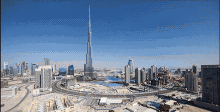

Yellowstone


Geographical Location: North America
Yellowstone is the first national park in the United States. It covers over 2.2 million acres, and provides an opportunity to see wildlife and explore geothermal areas. In fact, Yellowstone contains about half the world's active geysers.
These unique opportunities also bring out a lot of bad decisions among the tourists. Every year visitors injure themselves or the wildlife by getting close to the animals. You can see examples of people making bad decisions by visiting Yellowstone National Park: Invasion of the Idiots, Tourons of Yellowstone, or Cowboy State Daily.
Photo Gallery


Sofia, Bulgaria


Geographical Location: Europe
Sofia is the capital city of Bulgaria, a country located in Eastern Europe. It is part of the European Union and the primary language spoken is Bulgarian. The city’s population is around 1.3 million. In addition to its urban structures, Sofia also contains a mountain peak called “Vitosha”.
Vitosha is located 30 minutes from the capital’s center, and can be reached by foot, car, and by lift. The peak has an elevation of 7,520 feet and during the summer months the average temperature is around 64 degrees fahrenheit. This makes it a great sight for any type of traveler who seeks the outdoors.
Photo Gallery


Dubai

Geographical Location: Asia
Dubai, a city known for its impressive structures like Burj Khalifa and Palm Jumeirah, combines advanced technology with modern architecture. The city hosts Dubai Internet City, where big tech companies and startups collaborate, aiming to become smarter by using technologies like blockchain to enhance government processes. Additionally, Dubai's plans to implement 3D printing for constructing buildings represent a major step into the future.
Exploring Dubai means not only admiring its remarkable buildings but also understanding how it leverages technology to transform operations. The city's approach encompasses both architectural marvels and innovative tech solutions, making it an exciting prospect for individuals curious about the intersection of technology and urban development.
Photo Gallery


Jasper, Canada
Geographical Location: North America
Spirit island, located in the heart of Maligne Lake, Jasper was a spiritual place of healing for the rocky mountain tribe for over 2000 years before they were displaced in the 1900s. They believed that each mountain with a face in the hall of the gods(the mountains in front of spirit island) contains the essence of each god of each religion as well as all notable rocky mountain tribesmen.
In 2020, there was a forest fire in a nearby forest region of Lake Maligne. Because of that forest fire, the few remaining tribe members from that same rocky mountain tribe approached the Canadian government to get access to Spirit Island away since they believe that the forest fire was a punishment by their gods for being away from their spiritual home for so long. Now, the rocky mountain tribe works with the Canadian government to perform their spiritual healing once a year.
Photo Gallery